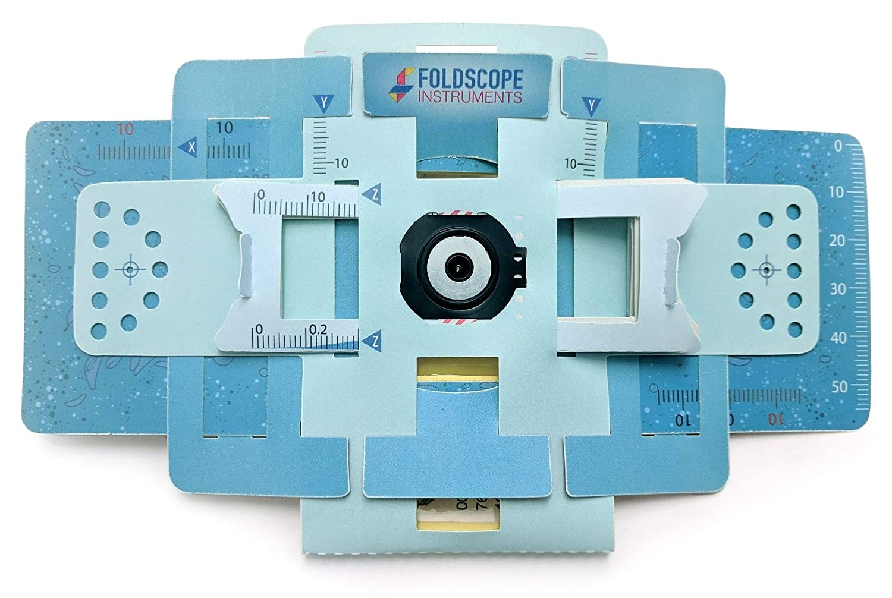

How they made a $1 microscope

The two guys from Standford build a $1 microscope one of them is Mannu Prakash and other is Jim Cybulski.
Manu Prakash is an Indian scientist who is a Professor of Bioengineering at Stanford University. Manu was born in Meerut, India.
He is educated from MIT and IIT.
While Jim Cybulski was a Phd student in Manu's
labaratory at Standford University.

So let's talk about how it all started.Their inspiration for the $1 microscope originated from field visits around the world, where they continually encountered bulky, broken microscopes, or a lack of microscopes entirely. As traditional microscopes are often expensive or cumbersome, they realized the universal scale of this problem and the need for a low-cost, revolutionary solution.
What is the best microscope you can build for under $1 in parts? This question motivated their work. In the early days of the project, ideas for the low-cost microscope were sketched down on paper. These sketches struck a chord. Although the sketching on paper was initially simply practical-- it also alluded to a critical revelation in the search for a low cost medium: paper. Paper is a brilliant and versatile material, as it is not only very inexpensive, but also gives rise to precision when it is folded into specific configurations.
The project blossomed into the invention of the Foldscope, the foldable microscope made mostly of paper, that to this day still achieves the goal of being less than one U.S. dollar in parts.
While further deployment for health-care applications of the Foldscope continue in academic labs around the world, the revolutionary affordability of microscopy provided by the Foldscope inspired the pair to get their tool into as many hands as possible.(foldscope is the $1 microscope)

Now they send over 60000 foldscope to the people who really need them
In thier Pilot Program alone they send more than 60000 foldscope in more than 135 countries to the people who really need them , they began this program in the 2014 so that they can make science available for all. The send these foldscope in countries such as India , countries of African continent.
What we learnt from this inspiring story
We learnt that education is free for every one , education doesnot distinguish between rich and poor
We also learnt that how we can use our education to help the society
And the last thing we learnt that is if they can change the society so we can also do this . Kindly share your story with us so that we can share your work so that other can also know how you are helping the environment , the society please share your work at our email GoNews!yourstories@gmail.com